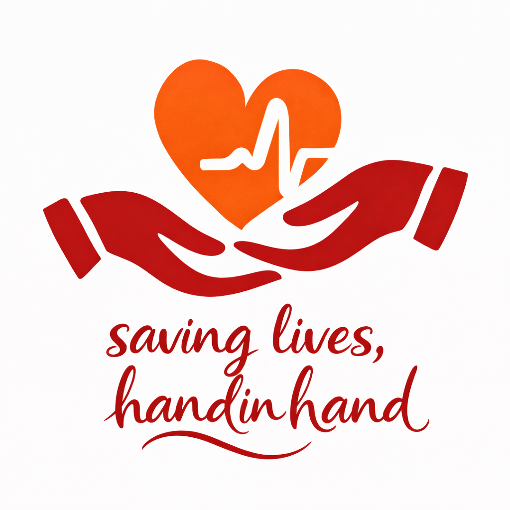

HandInHand is website that is mainly focused on helping people in need of transplants connect with potential donors in an easier and more accessible way , and to reduce the numbers on hospital’s never ending waiting lists for organ transplants.
It also contributes to reducing amount of corruption associated with organ donations in hospitals, such as the illegal sale and trafficking of human organs and the preferential of wealthy patients. It does this by providing transparency between both the patient and the donor, and ensures ethical allocations based on medical need.
Organ donation is when someone gives one or more pf their organs to another person in need of a transplant, without expecting anything in return. Organ donation is a deeply personal yet multifaceted choice, influenced by factors like medical consideration, moral principles, cultural norms, faith, and laws.
Organ donation is needed when a person’s organs are damaged due to diseases or illnesses and failing to function as they should. “Conditions such as chronic renal failure may require a kidney transplant, while fatal liver diseases, such as cirrhosis or liver cancer, may require a liver transplant.
Heart and lung transplants may be necessary for individuals with severe heart or lung conditions.”